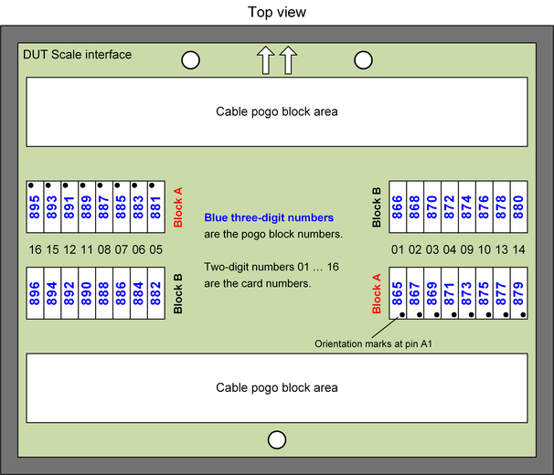

MUX cards pogo block numbering
Each of the MUX cards features one 34-row pogo interface that is divided into two 17-row blocks.
| Supported V93000 systems : EXA Scale (SmarTest 8), Smart Scale (SmarTest 7+8) |

MUX card configuration in the model file
Diagnostics of the MUX cards in SmarTest 7.3.4 or higher versions requires defining all installed MUX cards in the model file. For more information, refer to keyword mux_boards in the GLOBAL section of the SmarTest 7 model file or in the GLOBAL section of tester.model of SmarTest 8 .
The following is an example of the GLOBAL section in the model file for configuring MUX cards:
GLOBAL
mux_boards = 8, type=PMUX01, pogoblocks=866,868,870,872,881,883,885,887
Functional changes
- Introduced in SmarTest 7.3.2 / 8.1.2
- SmarTest 7.3.4: New definition of the MUX cards in the model file.